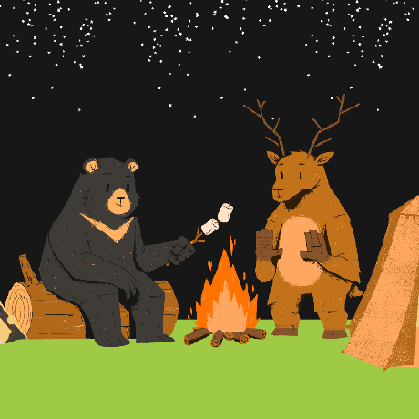

Keep it understandable
Clear contracts, readable code, and simple designs before unnecessary complexity.

Hello, I'm
I build backend systems with clarity, reliability, and room to scale.
Senior Associate Platform L1 at Publicis Sapient, engineering high-throughput backend services across Java 21, Spring Boot, Apache Kafka, reactive microservices, and Kubernetes. Passionate about resilient distributed systems, event-driven design, and continuous learning.
I like understanding how systems behave—not just how to make them run.
From a clean REST endpoint to an event-driven workflow, I enjoy making complex backend requirements easier to understand and maintain.
My focus is backend application development: API design, service integration, data access, caching, messaging, performance, and the engineering practices that make software easier to ship and operate. I also use personal repositories to practise and document topics such as Kubernetes, Kafka, Spring Boot, and data structures and algorithms.
See what I'm building ↗Clear contracts, readable code, and simple designs before unnecessary complexity.
Think about failures, retries, observability, tests, and how a service behaves in production.
Separate repositories for focused learning, experiments, and end-to-end project work.
A broad toolkit spanning backend development, reactive systems, cloud infrastructure, and engineering practices.
Core Java, OOP, Collections Framework, Streams API, concurrency, exception handling, generics, DSA, SQL, and problem solving.
Java, JavaScript, TypeScript, Python, C, C++, HTML, and CSS.
Spring Boot, Spring Framework, Spring MVC, Spring Security, Spring Data, Hibernate, J2EE, JDBC, Servlets, Spring Batch, AOP.
Spring WebFlux, Project Reactor, Mono, Flux, non-blocking I/O, asynchronous composition, backpressure concepts.
Microservices, distributed systems, event-driven architecture, REST APIs, RESTful services, GraphQL, OpenAPI, Swagger, SOLID, design patterns, system design.
Apache Kafka, Spring Kafka, Avro, Schema Registry, RabbitMQ, Redis Pub/Sub, producer/consumer patterns, retries, dead-letter queues.
PostgreSQL, MySQL, MariaDB, MongoDB, Redis, DynamoDB, Spring Cache, Spring Data JPA, query optimization.
AWS, Google Cloud Platform, Microsoft Azure; S3, EC2, CodePipeline, CodeBuild, cloud deployment fundamentals.
Docker, Docker Compose, Kubernetes, Kind, Minikube, Helm, Rancher, deployments, services, probes, rollout strategies.
Kubernetes pods, deployments, services, ConfigMaps, Secrets, liveness/readiness probes, rolling updates, Helm charts, Kind, Minikube, and Rancher.
GitLab CI/CD, GitHub Actions, Jenkins, ArgoCD / GitOps, Maven, Gradle, Ansible, Terraform, Linux, shell scripting.
Splunk, Datadog, ELK Stack, Grafana, Prometheus, Spring Boot Actuator, CloudWatch, logging, metrics, monitoring.
JUnit, Mockito, MockMvc, integration testing, Testcontainers, Postman, API testing, code review, debugging.
Git, GitHub, GitLab, Bitbucket, IntelliJ IDEA, VS Code, JIRA, Postman, OpenAPI / Swagger.
Spring Security, authentication and authorization, JWT concepts, secure API design, access control.
ReactJS, JavaScript, TypeScript, HTML, CSS, and integration between frontend applications and backend APIs.
Maven, Gradle, Avro schemas, code generation, JSON, YAML, Docker image builds, Helm packaging.
NOTE This list combines technologies from my professional background and hands-on learning. The exact tools used vary by role and project.
Enterprise software development, backend engineering, and continuous learning.
Focused on dependable backend systems, clear APIs, event-driven integration, and continuous improvement.
Connect on LinkedIn ↗Backend engineering with Java 21, Spring Boot, Kafka, and reactive APIs. Work includes event-driven services, resilience patterns, and Kubernetes delivery through CI/CD and GitOps workflows.
Developed backend solutions using Java, Spring Boot, REST APIs, and microservices, with a focus on integration, maintainability, and performance.
Enterprise backend development with Java, Spring Boot, messaging, and cloud-native technologies, including work in banking and finance systems.
Java/J2EE application development using Hibernate, JDBC, Servlets, MySQL, and backend integration in enterprise applications.
University of Petroleum and Energy Studies (UPES).
Industry-recognized cloud and language certifications confirming foundational and specialized knowledge.
Amazon Web Services
Google Cloud
Google Cloud
Microsoft
Oracle
Have a question, opportunity, or idea to discuss? Send me a message and I'll get back to you promptly.